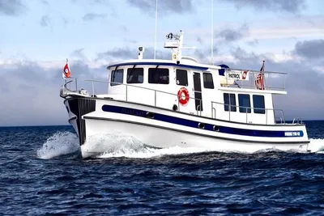

Nordic Tugs 42
1997–2015
The Nordic Tug 42 is the builder’s large two-stateroom pilothouse cruiser from the late 1990s through the mid-2010s. Despite the model name, representative later boats measure about 44 ft 8 in overall and use a single large diesel, shaft drive, substantial tankage and two heads. Many examples have a flybridge and boat deck; the model was replaced and refined by the Nordic Tug 44.

- Length
- 44.67 ft
- Beam
- 13.83 ft
- Draft
- 4.58 ft
- Hull behaviour
- Semi-Displacement
- Fuel
- Diesel
- Propulsion
- Shaft
- Engine configuration
- Single inboard diesel
- Boat family
- Tug
- Construction
- Fiberglass
Best for
- Couples planning extended cruising with regular guests
- Pacific Northwest, Alaska, Great Lakes and coastal cruising
- Owners wanting long-range tankage and a substantial pilothouse platform
Trade-offs
- Marina, haul-out and maintenance costs are yacht-scale
- Flybridge and boat-deck equipment increase windage and vertical clearance
- Single large-engine propulsion lacks twin-engine redundancy
- Exterior access to the flybridge on many 42s is less convenient than the later 44 interior-stair arrangement
Known concerns
- No model-specific concern has been promoted to B-Atlas’s evidence threshold. This does not mean the model has no age-, condition- or hull-specific risks.
Inspection focus
- Confirm model year, engine package and factory or owner-added flybridge equipment
- Inspect pilothouse and saloon window sealing and surrounding structure
- Moisture-test deck penetrations, cabin-top hardware and boat-deck areas
- Inspect exhaust, cooling, shaft, rudder and steering systems
- Inspect thrusters, generator, charging systems and owner-added electrical equipment
- Verify tank condition, supports, hoses and access for future replacement
Continue researching
Related boat models
40 ft · Semi-Displacement
39.83 ft · Semi-Displacement
34.92 ft · Semi-Displacement
32.08 ft · Semi-Displacement
44.42 ft · Semi-Displacement
45 ft · Semi-Displacement
About this record
B-Atlas preserves uncertainty: missing information remains unknown rather than being treated as a negative. Specifications and guidance describe the model record; individual boats can differ by year, equipment, refit and condition.